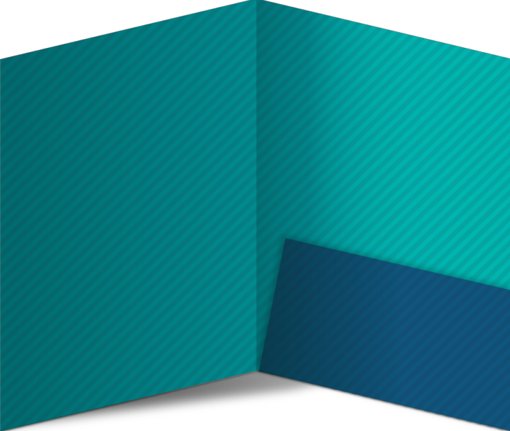

Fill
O conteúdo substituído é dimensionado para preencher a caixa de conteúdo do elemento: o tamanho concreto do objeto é a largura e a altura usadas do elemento.
Contain
O conteúdo substituído é dimensionado para manter sua proporção enquanto se encaixa na caixa de conteúdo do elemento
Cover
O conteúdo substituído é dimensionado para manter sua proporção e preencher toda a caixa de conteúdo do elemento: seu tamanho de objeto concreto é resolvido como uma restrição de capa contra a largura e a altura usadas do elemento.
None
O conteúdo substituído não é redimensionado para caber dentro da caixa de conteúdo do elemento: o tamanho do objeto concreto do objeto é determinado usando o algoritmo de tamanho padrão sem tamanho especificado e um tamanho de objeto padrão igual à largura e altura usadas do elemento substituído.
Scale-down
O conteúdo é dimensionado se none ou contain for especificado, o que resultaria em um tamanho menor de objeto concreto.